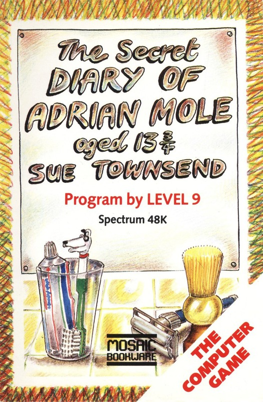
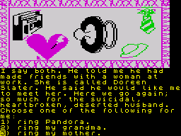

The Secret Diary of Adrian Mole


{kind=link}

| Publisher: | Mosaic |
| Price: | £9.95 |
| Year: | 1985 |
| Source: | CRASH, Issue 23 |

Adrian Mole the computer game is a super implementation of the highly successful and very funny diary books written by Sue Townsend. Playing the game takes you through a year in the fascinating life of Adrian Mole, a worried spotty adolescent, frustrated intellectual and poet. He has to contend with the rocky marriage of his parents, the insensitivity of his school mates and teachers, and bits of him that won’t keep still.
The problems of human existence take up much of his time but diversions lie in his relationships with a fourteen-year-old feminist named Pandora who sits next to him in geography, and an eighty nine-year-old man whom he visits with the good samaritan group from his school. He is dogged by ill-health and ill-healthed by his dog.
The aim of the game is to make our adopted hero as popular as possible with everyone — family, friends and dog. Every so often during the game your score appears on the screen with the likes of 38% indicating a middling thicko and 26% a spotty creep. The results of some actions may not be immediately obvious, for example, being too neat and tidy may arouse his mother’s guilt feelings. A number of random elements alter your course through the troubled path of adolescence and so play may vary each time you load up.

To any person who has read the Adrian Mole books, the program can still offer some challenges as some familiar scenes have a new twist. The game consists of a number of separate programs with the first two programs on Side One and the remaining two on Side Two. Each program covers a few months of Adrian’s life.
This game is not your usual adventure. The flow of text is much more like a book with the player only being asked to alter the course of events via a choice between one of three options. The fourth option, so easy to forget, displays a help menu which includes a service you would be wise to make use of early on: simply typing in the name of a character from the diary will bring up onto the screen a fact-file on that character in true Star Trek computer style. Features such as this, plus options such as RESTART and DEMO, really give this game a classy feel.
The cassette inlay speaks of an illustrated text game and this is very much what it is, as the pictures above the scrolling text do not show every new location, rather an abstract interpretation of the types of things running through our young hero’s mind. They are of similar style and frequency as those found in illustrated paperback books. As is often the case with such illustrations decorating a copious and highly absorbing text, you may well play most of the game without recalling one single picture.
If you haven’t read the Mole diaries, or seen the recent ITV television series (partly spoiled by the typecast parents) then you are in for a treat. Although the series stars a pubescent fourteen-year-old it is in fact universally funny. It, in a manner of speaking, chronicles the demise of civilisation through the miscomprehending eyes of a young budding intellectual. The idea that the world is running down is not a new one and must be pretty obvious to anyone gullible enough to have been harangued into buying a TV licence by those ridiculous BBC adverts. The fact that the Mole books soothe with laughter our institutionalised paranoia is nothing new. What the books, and this computer program, do bring out afresh through some very subtle writing is an atmosphere where even the most blinkered half cretin can see just what is so patently ludicrous about the lifestyles and mores being forced upon us by the advertising media (television and the Sunday Times etc).
At one point in the program, after doing his own washing, Mole wonders why his mum can’t be like those washday housewives on the telly. At another point he thinks of War and Peace as a Russian Dallas. I could go on with many examples but suffice to say that Adrian Mole is a tonic for so much of the nonsense behind our society’s decline into an uncaring and ludicrous bureaucracy. He is a likeable and very human person at a time when just about every character depicted in films, books and on television, is so uncaring, unashamedly self-motivated, and inhuman.
We join Mole’s diary on the first day of the year where he enters his new year resolutions which include hanging trousers up, a stop to squeezing spots, and, after hearing the disgusting noises from downstairs the previous night, a vow never to drink alcohol. The next few months see Mole observing a Mr Lucas, the next door neighbour, serving up a cup of tea while Mrs Lucas concretes the front of the house, sending a poem entitled ‘The Tap’ to the BBC, and a rebellious phase were both he and Pandora wear red socks to school. The story is peppered with humorous comments on modern life at the end of a cul-de-sac. At one point he comments on his ill-health and wonders at the amount of boil-in-the-bag food the family has eaten. His red spots could be an allergic reaction to plastic.
The idyllic lazy life of a schoolboy is far from our young hero as he has to come to terms with a mother fresh from assertiveness training who has him cleaning the whole house, and a fusty old codger called Bert Baxter who smokes, drinks brown ale and keeps a ferocious alsatian but who can’t have long to live as he is older than Ronald Reagan. But when life’s frustrations and inconsistencies become too much there’s always that intellectual medium which is the home of all greatwriters — the poem. I’ll leave you with this one concerning Adrian’s English teacher’s transportation. Dock Leaf’s got a Fiat, Covered in red rust, Its paint is blue, Its smoke is too, The wing mirrors are bust, Dock Leaf’s in his banger, Bouncing down the lane, the engine coughs, Exhaust falls off, And then it stops again.
COMMENTS
| Difficulty: | Easy to play |
| Graphics: | Abstract |
| Presentation: | Good |
| Input facility: | One of four options |
| Response: | Very fast |
| General rating: | Mole is brilliant, and so is this game. Find somewhere that sells it, before we all go insane |
| Atmosphere: | 9 |
| Logic: | 9 |
| Addictive quality: | 9 |
| Overall: | 9 |